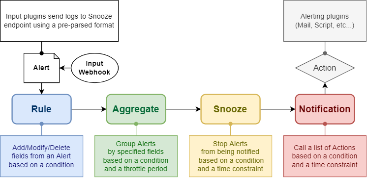

Inject logs into Snooze server#

Architecture - Inputs#
To receive alert from different sources, Snooze server uses a plugin system. Snooze server exposes a HTTP API and each plugin uses this API to create new alerts.
The following plugins are officially supported: * Syslog * CLI
Client configuration#
Most plugins are written in python and use the snooze-client python package
to communicate with the Snooze server. As such, they all have a common configuration
file for configuring the access to the snooze server in /etc/snooze/client.yaml.
# /etc/snooze/client.yaml
---
server: https://snooze.example.com:5200
See more details in the documentation of snooze-client.
Plugins#
Syslog#
See plugin documentation.
CLI#
For usage in scripts, jobs, as well as for testing purposes, a CLI is available.
Installation#
If running on the snooze server:
$ sudo /opt/snooze/bin/pip install snooze-client
On any other node:
$ sudo pip3 install snooze-client
Usage#
$ snooze alert "timestamp=$(date -Is)" host=myhost01 severity=err \
custom_field=custom_system "message=Alert on custom system"
Spaces can be escaped in standard bash, what matters is that fields and values should be separated by a =.
The character = is not supported in the field name, but is supported in the value.
The example will result in the following alert:
{
"timestamp": "2021-07-01T22:30:00+09:00",
"host": "myhost01",
"custom_field": "custom_system",
"message": "Alert on custom system"
}
> Note that no field is mandatory.
HTTP API#
Alert#
Method |
Path |
Header |
|---|---|---|
POST |
|
|
Generic parameters (all optional):
- timestamp:
Timestamp of the alert. Any format is acceptable (it will be parsed by python’s dateutil)
- severity:
Severity of the alert. Any string acceptable, but we recommend strings that match syslog’s severify keywords.
- host:
Name of the host issuing the alert.
- message:
Message describing the alert.
$ curl \
-H 'Content-Type: application/json' \
-XPOST https://snooze.example.com:5200/api/alert \
-d '{"message": "my alert", "host": "myhost01", "timestamp": "2021-07-01T22:30:00+09:00"}'
Python API#
If you’re using a python script, you can instantiate a Snooze object
and call its alert method with a dictionary. All types used in the
dictionary need to be serializable in JSON (str, int, float, dict, list are acceptable).
from snooze_client import Snooze
from datetime import datetime
# The API will get the server value in `/etc/snooze/client.yaml`
api = Snooze()
# Making the alert to send
timestamp = datetime.now().astimezone().isoformat()
alert = {'host': 'myhost01', 'message': 'my alert', 'timestamp': timestamp}
# Sending the alert to Snooze server
api.alert(alert)